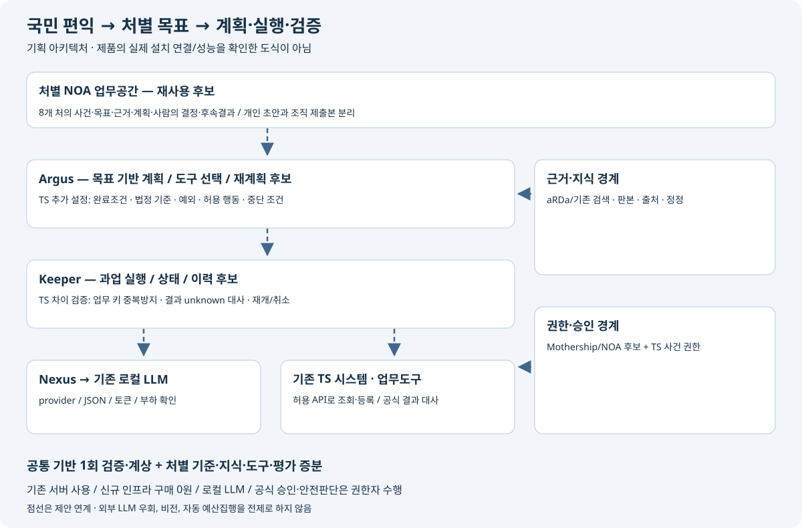

CCK 제품 근거와 TS 재사용 설계
- R&D 폴더에서 확인한 기술 계보를 TS 요구사항과 연결했음.
- 계획·실행 엔진 전체를 새로 만든다는 전제를 고정하지 않고, 기존 자산의 재사용·설정·연계·기관 적합성 검증을 구분함. 실행 가능한 NOA·Argus·Keeper 소스/설치본은 이번 탐색에서 특정하지 못했으므로 공수 절감액을 확정하지 않음.
2026-09-22 내부 사전기획 검토 · 대상: CCK 기획/개발 책임자와 TS 업무·디지털 담당자 · 원본 읽기 전용 · 제품 실행 시험 미수행
1. 사용자 확인사항과 이번 판단
- Agentic OS 추가제안은 현재 TS 계약/기술협상에 포함되지 않았음: 사용자 확인. CCK가 해당 기술을 보유하지 않았다는 뜻은 아님.
- NOA를 조직 업무공간으로 확장하고, 처별 UI·목표·근거·실행도구를 연결함. aRDa는 문서·지식 역할로 유지함.
- 로컬 LLM·기존 서버·신규 인프라 투자 0원·비전 제외·CCK 주관 조건을 유지함.
- Assumptions: 제품 사용권·버전·설치 범위와 TS 연계권한은 별도 확정함. R&D 목표나 시제품을 TS에서 즉시 재사용할 수 있는 납품 기능으로 간주하지 않음.
2. 지정 폴더 탐색 결과
| 자료/탐색 | 관찰 | 적용 판단 |
|---|---|---|
| [CCK] R&D / 06_기술스택 / 00_기술스택_요약.md | Argus·Keeper·Nexus·Mothership·Mochi 등의 기술 인덱스와 G 아카이브 경로 | 기술 탐색 진입점. CONFIRMED·TRL 등 과거 분석 표시는 이번 검증 결과로 승격하지 않음 |
| 05_회사현황_기술_증빙 바로가기 | 기술/회사 근거 링크는 보존된 계획서·분석자료로 연결 | 바로가기 이름을 실제 제품 저장소로 오인하지 않음 |
| 숨김 파일 포함 소스/설치 manifest 및 제품 심볼 검색 | 문서 생성·검수 스크립트, 연구 실험 코드, 프로젝트 대시보드가 발견됨 | 제품 엔진 소스는 특정하지 못함. 회사 전체에 소스가 없다는 결론 아님 |
| ZIP 64개 파일의 중앙목록 확인 시도(중복 보존본 포함) | 59개 읽음; 5개 0바이트 ZIP은 읽기 실패 | 실패한 압축자료는 미검토로 유지. 중첩 해제·설치·실행은 하지 않음 |
| CCK_프로젝트_대시보드_소스.zip | React/TypeScript 사업관리 화면·과업 데이터 소스 | 프로젝트 대시보드 코드이며 Argus/Keeper 런타임 근거로 쓰지 않음 |
| outputs / … / j1_experiment / predictors.py | 작업 단계·지연·버퍼 예측을 위한 연구 코드 | 제품 실행엔진, TS 서버 실측 또는 제품 성능 증명으로 쓰지 않음 |
| G 아카이브의 보존 추출 ZIP | 제품문서 3종과 코드 분석 노트 1종을 직접 읽고 member SHA-256 기록 | README 참조는 발견했지만 원본 저장소의 commit/build는 미확인 |
- 검색 범위와 읽기 실패는 압축자료 탐색 기록, 발췌 위치·해시는 근거 원장에 남김.
- 원본 파일·연구 자료·소스는 변경하지 않았음.
3. 제품별 재사용 후보
| ID / 제품 | 문서에 기재된 기능 | TS 적용 후보 | 추가 확인 | 근거 |
|---|---|---|---|---|
| PR-01 / NOA | 조직 업무공간·업무 연결·정책/승인/감사 기능에 관한 공식 공급사 소개 | 처별 UI를 NOA의 업무공간으로 구성 | 현재 UI 컴포넌트·SSO·접근성·문서/과업 API | https://www.ccksolution.com/noa |
| PR-02 / Argus | Planner / Executor / DataFlowManager, Core/Plugin·YAML, 계획과 실행 분리 | 목표·계획·의존관계·재계획 공통 기반의 우선 재사용 후보 | 사용 버전, 로컬 모델 호환성, 목표 완료조건, 플러그인 계약 | CCK-EX-01 |
| PR-03 / Keeper | LangGraph gRPC 실행, Task 상태·원자적 claim·완료 알림 | 과업 실행·상태 관측·복구 기반 재사용 후보 | 업무 쓰기 멱등성·unknown 대사·재기동 재개·승인 재확인 | CCK-EX-02 |
| PR-04 / Nexus | ChatNexus 모델 호출 중앙화·TPM·사용량 기록 | 기관 내부 LLM 호출·자원 제한·관측 연결 후보 | 폐쇄망 provider, tool calling·JSON·timeout·모델별 토큰 계측 | CCK-EX-02 |
| PR-05 / Mothership | SSO, 회사별 격리, 사용자/역할 관리 | 기존 인증·조직 관리 연계 후보 | 처/사건/문서 권한, 퇴직·전보 반영, 개인 자료 선택 제출 | CCK-EX-03 |
| PR-06 / Mochi/Argus 컨텍스트 정책 노트 | 의존 데이터·토큰 예측·분할·재계획 처리에 관한 코드 분석 | 긴 문서 묶음 처리의 실패/재계획 시험 설계에 활용 | 정책 파일 원본, 설정 버전, 실제 토크나이저, 모델별 한계 | CCK-EX-04 |
| PR-07 / aRDa 문서·지식 연계 | 기존 TS 설계의 문서/지식 공급 경계 | 기존 문서 검색·원문·권한·판본 API 재사용 검토 | 구현 버전과 API, 출처 좌표, 문서 정정·권한 전파 | 기존 01_공통아키텍처 문서·지식 경계 |
- NOA의 조직 업무공간·정책/승인/감사 연결은 CCK 공식 제품 소개의 설명임.
- 이는 제품 소개 수준의 근거이며 기관별 설치·성능·보안 적합성 검증을 대신하지 않음.
4. 전체 연결 구조

제안된 연계 관계이며 현재 제품 구성도나 배포 검증 결과가 아님. Argus의 자체 엔진 설명과 LangGraph 기술스택 표기가 함께 있어, 실제 버전과 Keeper와의 경계는 배포 manifest로 확인해야 함.
5. 문서에서 바로 넘겨짚으면 안 되는 차이
| 자료의 표현 | TS에서 추가로 입증할 것 |
|---|---|
| Keeper의 원자적 Task claim | 외부 시스템 등록의 업무 멱등성. 작업 잠금과 응답 유실 후 중복 등록 방지는 별도 문제 |
| 상태 저장·graceful shutdown | 갑작스러운 프로세스 종료 뒤 정확한 재개·승인 재확인·외부 결과 대사 |
| Mothership의 회사별 분리·역할관리 | TS 처·사건·문서별 권한, 전보/권한 회수, 개인 자료의 선택 제출 |
| Nexus의 복수 LLM 라우팅 | 외부 모델 없이 기관 로컬 모델만 사용하는 경로·도구호출·구조화 출력·성능 |
| 계획/실행 분리·자기교정 | 실패와 새 근거에 따른 과업 변경·중단 한도·공식 결과 확인. 요약 재생성만으로 완료 불가 |
| 분석 노트의 15,000 토큰·80% 경고·품질 곡선 | 설정값 및 작성자 설명임. TS 모델별 성능·품질 보증이나 일반 한계값으로 채택하지 않음 |
| Foundry·NL2SQL·Evidence Trail 등 R&D 관련 표현 | 문서별 기보유/개발 목표가 혼재. 현재 제공 범위와 신규 개발 범위를 버전 기준으로 구분 |
- Argus 분석자료의 “적용제품 1개”와 “2개 교집합” 서술도 일치하지 않음.
- 적용 제품 수·운영 완료·환각 제로·비용절감률은 이번 TS 도입 근거로 확정하지 않았음.
6. 8개 처에 반영할 업무 전환
- 공통 엔진의 도입 자체가 목적은 아님.
- 아래 사건에서 계획·조치·후속 결과가 달라지는지를 검증함.
- 모든 효과는 목표/가설이며 실측 결과가 아님.
| 처 | 기존 대표과업 | 기관·국민 목적 | 추가 설계/실증 | 효과 확인 | 시험 |
|---|---|---|---|---|---|
| 모빌리티연구처 | MR27-03 | 필수 검정의 신뢰성을 유지하면서 변경된 제품에 맞는 입증을 준비하고 반복 보완을 줄임. | 시험차량 조건 변경 → 추가 증빙/재시험 필요 후보를 근거로 재계획; AI가 검정 합격 확정 금지 | 동일 시험회차·조건별 반복 보완율과 증거 누락률 | RV-MR |
| 데이터융복합처 | DF27-01 | 검증된 위험 신호가 적절한 예방조치 검토와 후속 확인으로 이어지는 시간을 줄임. | 상황 변화에 따른 분석 → 기존 결론의 적용범위 재계산·추가 확인 요청; 설명 생성으로 조치 완료 처리 금지 | 비교조건 오류율·검증된 조치 제안 채택 및 후속 결과 | RV-DF |
| 교통안전처 | SA27-02 | 조치서 제출 뒤에도 남는 위험을 확인하고 실제 해소와 재발방지까지 관리함. | 안전미흡 실제 해소 → 현장 확인 과업 유지·담당자에게 보완계획; 보고서 제출만으로 종결 금지 | 증거 확인된 해소율·동일 미흡 재발률 | RV-SA |
| 자격교육처 | QE27-02 | 수강 완료를 넘어 새로운 안전상황에서 필요한 판단을 수행하도록 지원함. | 학습·평가 운영 전환 → 허용 교육과정 안에서 보충학습/재평가 계획; 자격·합격 자동 결정 금지 | 보충교육 후 역량 충족률·재평가 결과 | RV-QE |
| 기후탄소물류처 | CL27-02 | 거래 해석의 혼선과 반복 정정을 줄여 기한 내 적정한 신고를 완료하도록 지원함. | 거래와 신고 정합성 → 정정 영향·기한·필요 자료를 계획하고 공식 도구의 조회/대사 후 처리 | 오신고·중복 신고·기한 경과율 | RV-CL |
| 정책지원처 | PS27-01 | 이동수요를 파악하고 실행 가능한 대안을 비교해 실제 이동의 미충족을 줄임. | 이동취약 정책 대안 → 원인 가설·대안·재정/권한 조건을 비교하고 부족 근거 수집 계획; 전국 배차·보조금 자동 결정 금지 | 필수 이동 미충족 변화·대안별 대상/분모·정책 검토 채택 | RV-PS |
| 규제혁신처 | RI27-01 | 허가조건 변화와 현장의 불일치를 조기에 확인하여 안전한 실증 준비·이행을 지원함. | 규제특례 조건 이행 → 변경 영향받는 조건·기관 협의·추가 입증 과업 생성; 규제 적법성 AI 확정 금지 | 미이행 조건 조기 발견·보완 후 해결율 | RV-RI |
| 실증사업처 | DV27-02 | 진단 권고가 현장 조치로 이어지고 보행위험과 접근성이 함께 개선되는지 확인함. | 현장 개선과 효과 → 조치 이행과 효과 측정 과업을 분리; 재발 시 원인 가설과 후속 조치 재계획 | 확인된 위험 해소·재발·이용자 불편 변화 | RV-DV |
- 8개 처 UI와 41개 연간 과업은 기존 원장을 유지함.
- 상세 구현·견적 검토 대상은 현재 8개 대표 서비스이며, 이 검토로 41개 전부의 개발비가 확정되는 것은 아님. DRT는 정책지원처의 이동취약 문제를 해결하는 대안 중 하나로 유지하며 전국 배차·재정배분 실행 플랫폼 비용에 포함하지 않음.
7. 다음으로 확인할 실제 구현 지점
- 문서가 가리키는
cck/keeper/README.md,cck/keeper/CLAUDE.md,cck/nexus/server/README.md,cck/mothership/README.md의 저장소 root·commit·release와 설치본 대응. core/planning/val/policy_manager.py및 도메인 YAML schema·sample·테스트의 실제 파일.- 로컬 provider 설정, 모델/토크나이저/추론서버 버전, 비밀값을 제거한 배포 manifest, 의존성/SBOM, 사용권.
- 제품 소스 전체를 외부 전송할 필요는 없음. 승인된 로컬 검토 또는 실행 증빙으로 요구별 적합성을 판정할 수 있음.